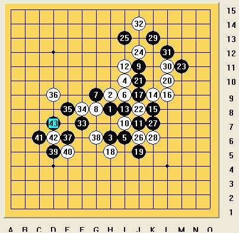
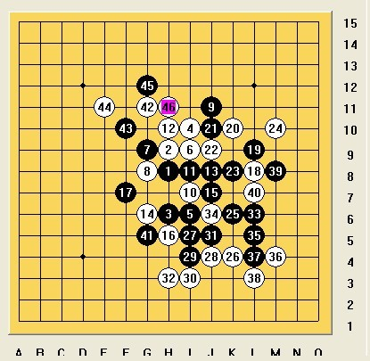

说说全团赛几局有意义的棋
#1 说说全团赛几局有意义的棋 作者：蓝天蓝 发表时间：2011-7-25 18:30:50
说说全团赛几局有意义的棋
黑胜王烨林

对方开瑞星，我马上换了。想了十多分钟，我并没有下最强的 11 ，考虑到对手属于防守型的，于是打算走这个老 11 ，依稀记得后面的功法很激烈，希望能找到机会杀。 19 可花费了我不少时间， 20 还是防对了，显然白大优， 25 后白已经必胜，可对方只剩不到 1 分钟，这时候竟转身来防，这个严重错误的决策导致后面在时间紧张的压力下出现防守失误。
花絮：
狮子算 20 的时候不断摇头“干嘛走这么激烈哦”几分钟后，无奈地挤出来一句“好像没防了”，哈哈，乐死我了。事实证明对这种棋手就该下激烈的，或者逼她攻，情缘后来也弄死她了，她事后对情缘说，“你下棋太没境界了，逼人家攻，我还打算下瑞星在中局和你拼杀呢！”
黑败韦振强

这是本次比赛最惊险刺激的一局。
/*760*90，创建于2012-2-9*/ var cpro_id = 'u761865';